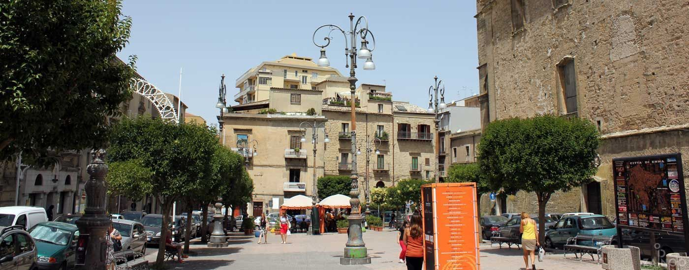

Piazza Vittorio Emanuele
Provincia di Enna

Contesto Urbano ed Evoluzione
Situata sulla cresta del monte su cui sorge la città alta, a quasi mille metri di altitudine, questa piazza funge da cerniera urbanistica tra i rioni medievali e l'espansione successiva di Enna. È stata selezionata proprio perché incarna in modo perfetto la natura stessa della città, unendo la funzione aggregativa a una straordinaria apertura geografica sul paesaggio.
Lo spazio, noto localmente come "Piazza San Francesco", si sviluppa come un rettangolo che si apre sul lato settentrionale offrendo una terrazza panoramica sulle sterminate vallate della Sicilia centrale.
Dal punto di vista architettonico, la piazza è definita dall'imponente Chiesa di San Francesco d'Assisi, dotata di un monumentale campanile che originariamente faceva parte del sistema difensivo della città, e dal razionalista Palazzo del Governo, sede della Prefettura.
Socialmente, la piazza rappresenta il principale punto di ritrovo all'aperto degli ennesi, amata per la vista sul territorio circostante.